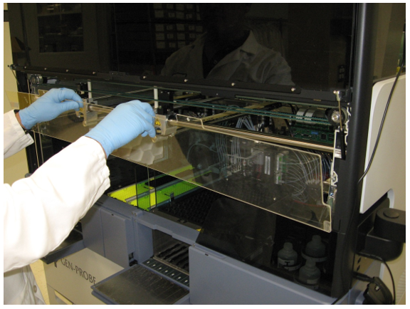
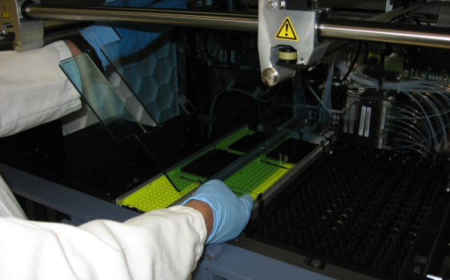
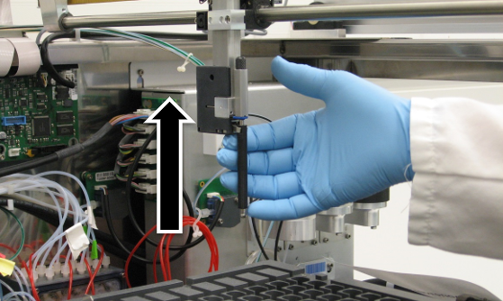
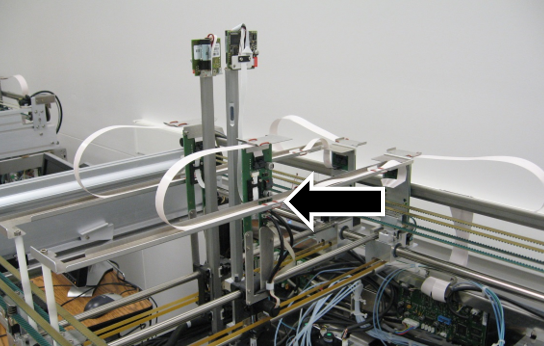
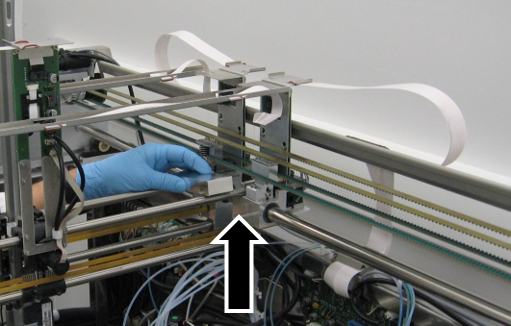
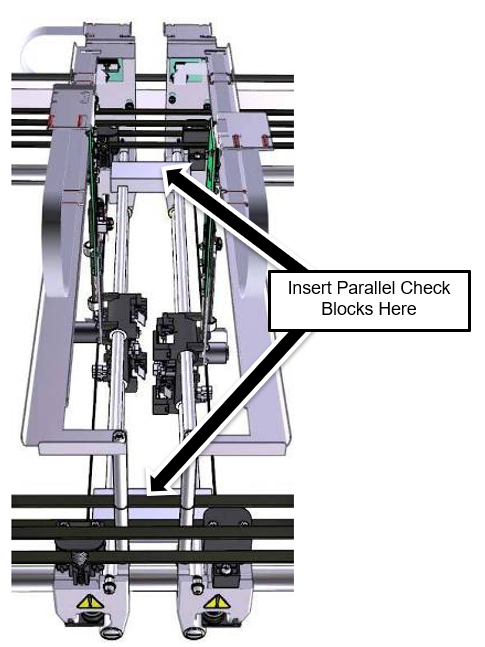
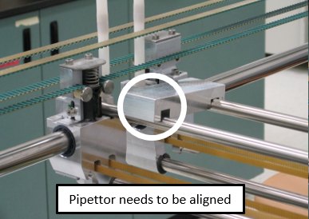
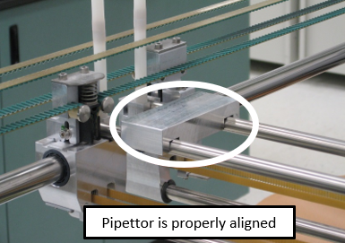
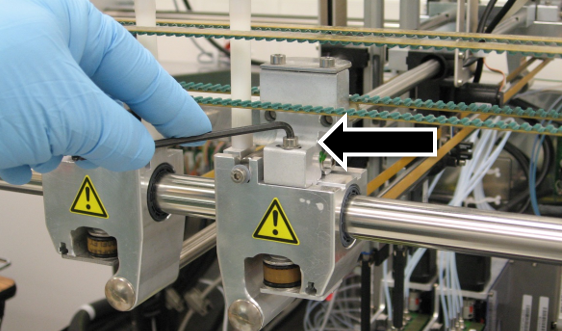

How to Use the Pipettor Rail Parallel Alignment Tool
Purpose
The purpose of this procedure is to provide service personnel with instructions for the use of the Pipettor Parallel tool. This procedure should be used when it is suspected that the Pipettor Y-Axis is out of parallel.
What is Affected
A Pipettor error code 253.000.00140 or 253.000.00143 may indicate that the right or left arm X-axis position is out of tolerance and that the Y-axis arms are not parallel and should be checked. During Pipettor teaching, an error stating that an arm is off by one or several millimeters may indicate the need to check that the arms are parallel.
The arms should be checked to confirm they are parallel following Pipettor arm X-axis belt replacement or tensioning.
Parts and Materials Required
- Proper PPE
- Small Philips Screwdriver or 2 mm Hex Wrench
- 3 mm Hex Wrench
- Tool, Pipettor Alignment PANTHER
Time Required
- 1 Hour
Procedure

|
Note— Some images shown are of a system without the canopy or skins. Most systems will have the canopy and skins installed; the procedures will remain the same. |
Part A: Inspect the Pipettor Alignment
- Put on proper PPE.
- Shutdown the Panther System and PC.
- Remove the clear Pipettor shield.
- Open the 2 canopy doors.
- Unscrew the two 3 mm screws that retain the clear shield using a small Philips screwdriver or 2 mm hex wrench as required by the individual system.
 Lift the shield up and out of the system.
Lift the shield up and out of the system.
- Place the shield on clean bench pads out of the way.
- Lift the Sample Bay shield up and out of its retaining brackets.
- Set the shield aside on clean bench pads.

- Carefully move the Pipettors up so they don't get damaged during the following steps.

- Move the Pipettors so that they are in the middle of the Y-Axis.

- Move the Reagent and Sample Pipettors close together around the middle of the system and place one of the alignment blocks on the top Y-Axis bearing bars at the rear of the system.


- Place the second alignment block on the top Y-Axis bars at the front of the system.
Note—If the second alignment block does not drop easily onto the bars but rather sits at an angle, then the Pipettors need to be aligned and you should proceed to Part B. 
Note—If both blocks drop easily in place and sit flush on the bars, the arms are parallel and further adjustment is not required. You may skip to Part: B Step 6 and return the system to service. 
Part B: Align the Pipettor
- Loosen the two 4 mm Pipettor alignment set screws on the Pipettor bearing block with a 3 mm hex wrench.
Note—This can be done on the front of the system or the rear. The fronts are typically easier, but there may be no room for adjustment left. 
Note—The Pipettor bearing block may be black in color rather than a natural aluminum as shown. - Align the arms using the Parallel block. The blocks should now easily fall into place.
Note—If force is required to align the arms, look for other conditions that could cause the error. - Tighten the alignment set screws on the Pipettor arms.
- Remove the Parallel Tool blocks.
- Test the alignment again by placing the Parallel Tool on the Y-Axis bars.
- Remove the Parallel Tool blocks.
- Re-install the Sample Bay shield.
- Re-install the Pipettor shield.
- Close all coves and confirm that the system has been returned to normal operating condition.
Verification
- Teach the Pipettor all locations.
- Start the Panther GUI.
- Verify that the system will reach Setup with no Pipettor errors.
 button at the top of the page to send feedback, comments, or change requests.
button at the top of the page to send feedback, comments, or change requests.